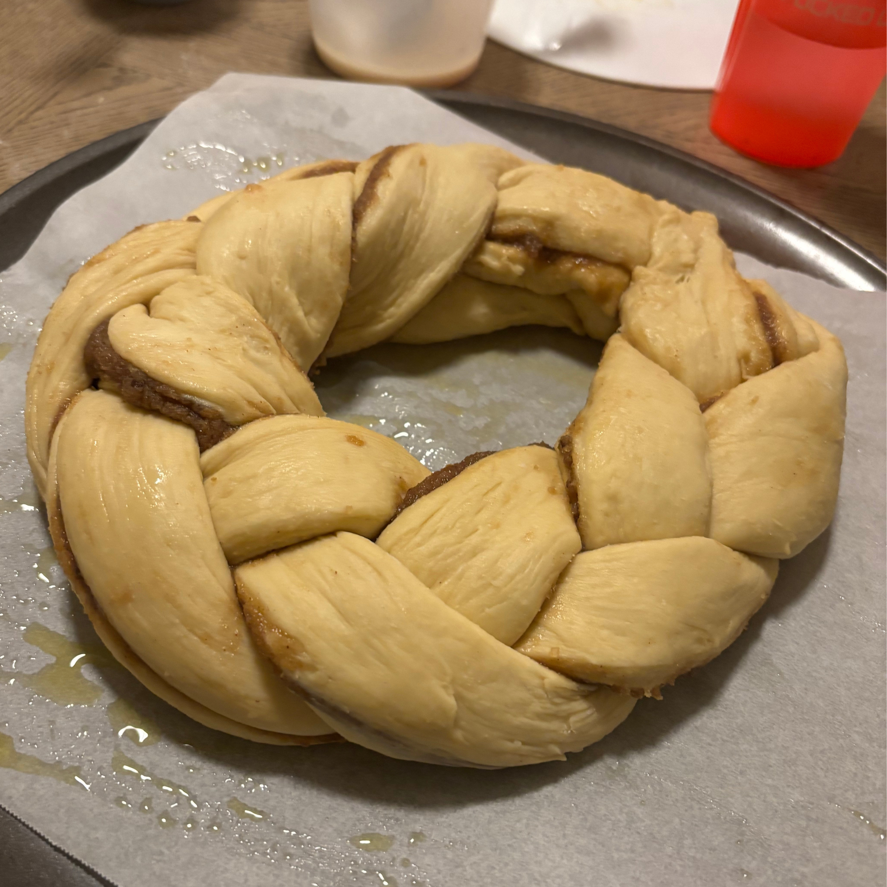
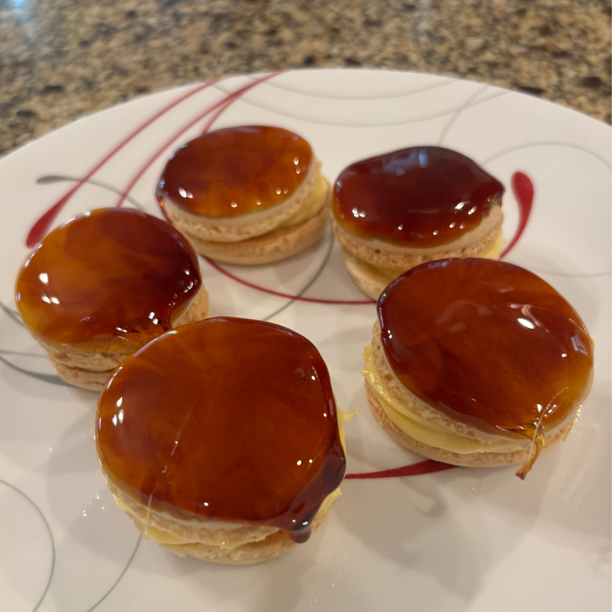

About
About me
Hello, I am Melvin Dacanay and I am a Junior graduating in 2028 at GSU.
I am majoring in Data Science and plan on working as
a SWE or in AI. I am a big fan of doing research in topics I
am passionate about.
My hobbies are:
- cooking
- making content online
- soccer
- rollerblading
- reading
My main hobby is cooking and I have been doing it for about 13 years now.
One memory I have from the early days of me cooking was making a
beef wellington from scratch. Nowadays I don't really follow any recipes
and just see them as references. One of my favorite quotes related to cooking
has to be "I don't care if it's dog s**t, you salt it after frying."
I have 3 other siblings but I am the only one out of all of them
that will graduate from GSU. My parents are also in tech
which had an influence on what I wanted to pursue.
I also own a business that operates during the summer where
I pressure wash residential properties.
I also have two dogs whom I love very much which is why I go
home very often.
Top 5 things/techniques I want to master in culinary arts:
- Boulangerie (breads)
- Viennoiserie (pastry umbrella term)
- Eastern cooking techniques
- Sauces
- Charcuterie and smoking
|
baking |
cooking |
drinks |
| Proficiency |
Medium |
Medium |
Low |
| Favorite |
Most |
Middle |
Least |
| Cost-Efficiency |
Most |
Least |
Least |
A showcase of food I'm proud of

